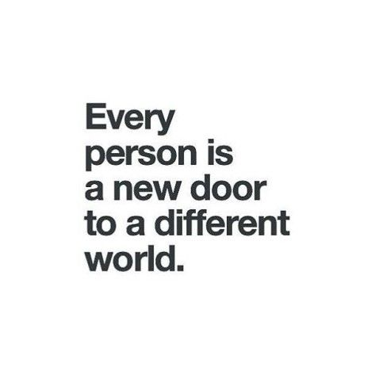

Happy Sunday! Thank you for supporting the Daily Bulletin project.
- Suggest improvements to the Daily Bulletin project.
- Unsubscribe if you no longer wish to receive emails from the Daily Bulletin project.
Wellbeing Inspirations
Want to contribute to a future Daily Bulletin? Share your inspirations to give everyone some morning wellbeing energy!
Quote of the Day

Delicious Dinings
| Day | Meal | Options |
|---|---|---|
| Sun | Brunch | Hot Breakfast |
| Dinner | Crispy Katsu Chicken | |
| Falafels 🌱 | ||
| Mon | Breakfast | Pancake / Waffle Bar 🌱 🌱 |
| Lunch | Chicken Gyros | |
| Veggie Gyros 🌱 | ||
| Dinner | Gnocchi Americano 🌱 |
The catering team would like to remind everyone to wash their hands before coming to the dining hall, and to refrain from eating in the servery area. Thank you!
Retrieved from Shared Weekly Menu. For reference only; accuracy not guaranteed.
Important Events
| Day | Time | Event | Location |
|---|---|---|---|
| Sun | 12:00–13:00 | UWC Day Opening Ceremony | Sports Hall |
| 13:00–14:00 | UWC Day Performances | Sports Hall | |
| 14:15–16:25 | UWC Day Workshops | Campus |
Retrieved from What's On This Week.
Today in History
- 1498 – A tsunami caused by the Meiō earthquake washed away the building housing the Great Buddha at Kōtoku-in in Kamakura, Japan; the statue has since stood in the open air.
- 1906 – The ocean liner RMS Mauretania, the largest and fastest ship in the world at the time, was launched in Tyneside, England.
- 1944 – Second World War: Allied forces captured San Marino from the German Army.
- 1973 – Billie Jean King defeated Bobby Riggs in straight sets at the Astrodome in Houston, Texas, in an internationally televised tennis match dubbed the "Battle of the Sexes".
- 2011 – The United States military ended its "don't ask, don't tell" policy, consequently allowing gay and lesbian people to serve openly.
Retrieved from Wikipedia.